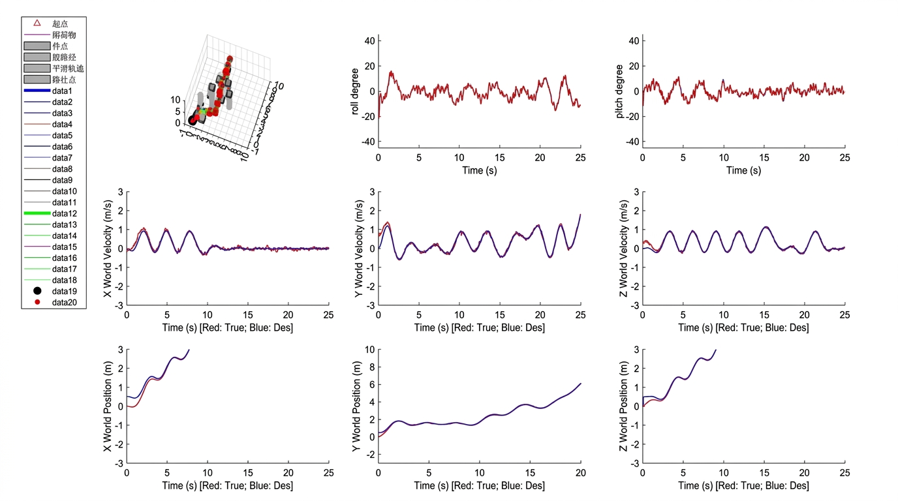

UAV Path Planning & Trajectory Control
From discrete waypoints to smooth flight trajectories. Team leadership and primary implementation of a Minimum-Snap trajectory generator.

- Period
- Dec 2025 – Jan 2026
- My role
- Team leader; Minimum-Snap implementation lead
- Validation
- MATLAB simulation
The project
A team course project at Chongqing University connecting geometric path planning, continuous trajectory generation and UAV control. The work progressed through reference tracking, 3D path search, altitude shaping and trajectory optimization.
My contribution
- Coordinated the team and contributed across all four project tasks.
- Led the Minimum-Snap implementation using seventh-order polynomials and quadratic optimization.
- Integrated the generated reference states with a provided PID controller and contributed to planning experiments and the final report.
Engineering approach
Track a reference path
Allocate a 25-second trajectory in proportion to segment lengths, generate position and velocity references, and derive yaw from the direction of motion.
Search a 3D environment
Compare six-neighbor A* with Theta*, whose line-of-sight checks allow arbitrary-angle connections between nodes. Add a progress-dependent altitude penalty to shape vertical motion.
Optimize the trajectory
Minimize the integral of squared snap, the fourth derivative of position. Solve the seventh-order polynomial coefficients with MATLAB quadprog under waypoint and continuity constraints through jerk.
Connect planning to control
Perform optimization at initialization, then evaluate position, velocity and acceleration at each time query for the provided tracking controller.
Results & validation
The saved complex-environment comparison shows the trade-off clearly: Theta* produced a shorter path with fewer waypoints, while taking longer to plan. The repository documents all four simulation tasks and their tracking plots.
| Metric | A* | Theta* |
|---|---|---|
| Waypoints | 19 | 7 |
| Path length | 18.0000 | 13.2594 |
| Planning time | 0.012948 s | 0.031532 s |
The 26.3% reduction in path length applies to this reported scenario. Results come from the original project report; physical flight validation was outside the project.
Project gallery
Original project figures. Select an image to view it at full size.


Source & tools
Explore the project files, technical documentation and supporting materials.